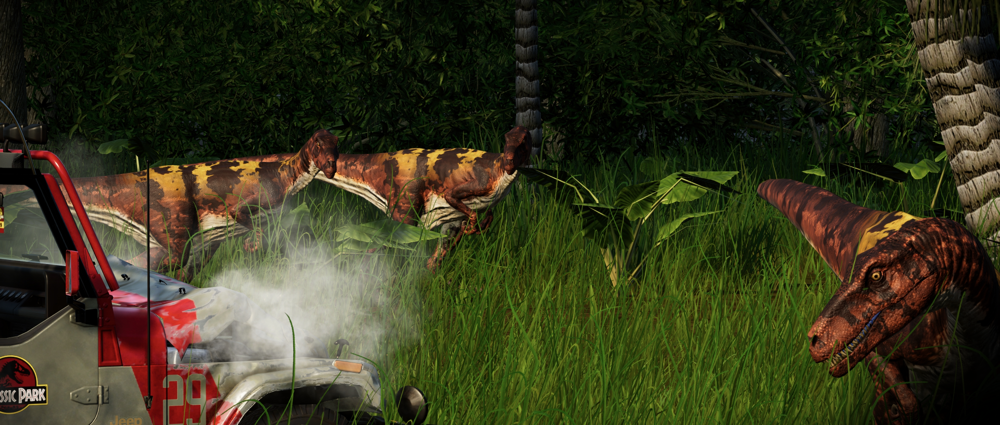

O Herrerassauro é um pequeno terópode, medindo cerca de 4,5 m de comprimento e pesando 200 kg. Ele é um dos primeiros dinossauros conhecidos, datando do período Triássico Superior. Com uma estrutura leve que permite que ele corra muito rápido e dentes grandes e serrilhados que o ajudam a agarrar a presa, o Herrerassauro se alimenta de herbívoros menores.